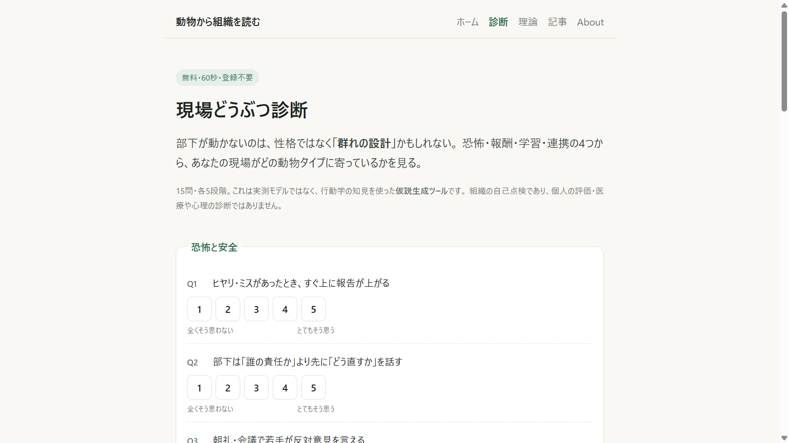
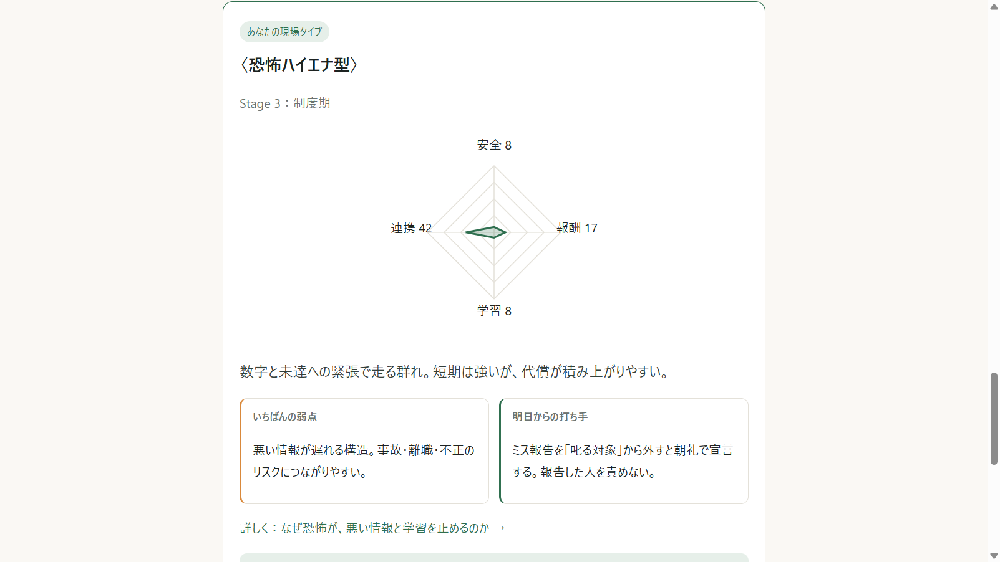
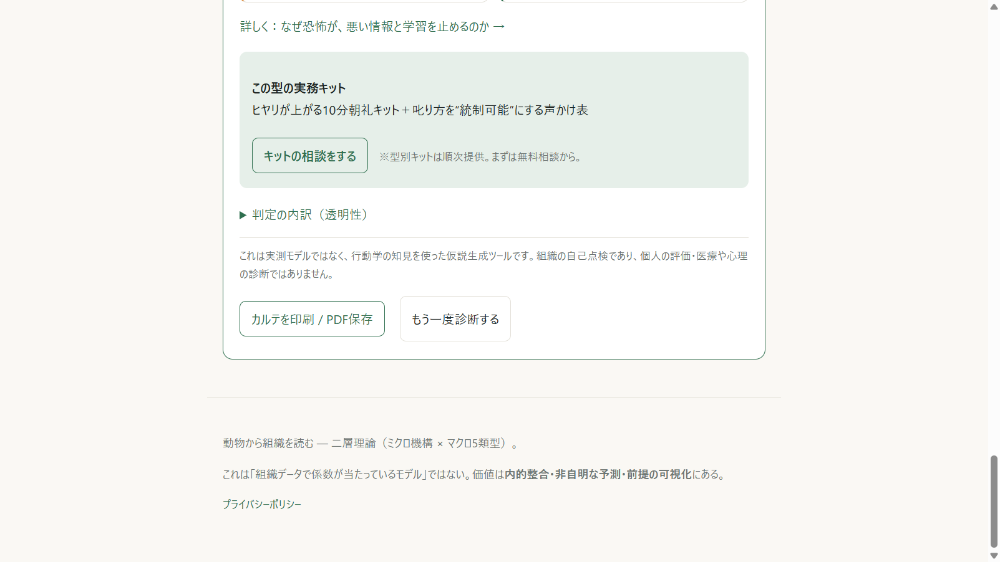

建設の現場AI診断 ── 固定費¥0・人手0・3分
「言わないと動かない」
「若手がすぐ辞める」
「ヒヤリが上がってこない」
性格ではなく、
群れの設計
の問題かもしれない。
15問・60秒・登録不要・
無料
zumenseki.github.io/doubutsu-soshikiron/shindan

結果は
7タイプ
＋4軸レーダー＝
自動カルテ
恐怖ハイエナ型 ── 弱点と打ち手まで自動生成

どこを
自動
に、どこに
人
を残したか
全自動 ・ API不要 ・ ¥0
採点
判定
カルテ生成
キット提示
サーバもAIも使わず、ブラウザ内で完結
あえて人を残す
個別相談
研修
＝ここが稼ぎ頭
無料診断から、
明日使える道具
へ
この型の実務キット → 記事・相談へ

無料診断
→
記事・キット
→
個別相談
→
研修
公開して
終わりにしない
建設の関係者へ直接届け、使われる兆しを追う。
診断完了
◯件
相談
◯件
購入
◯件
数字は現在進行中 ── 盛らずに正直に
係数を当てたモデルでは
ない
行動学の知見で
"仮説を立てる"
道具です。だから誇張せず、現場で確かめながら直していきます。
動物から、組織を読む
診断 ▸
zumenseki.github.io/doubutsu-soshikiron/shindan
コード ▸
github.com/zumenseki/doubutsu-soshikiron
固定費 ¥0 ・ API不要